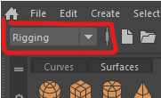
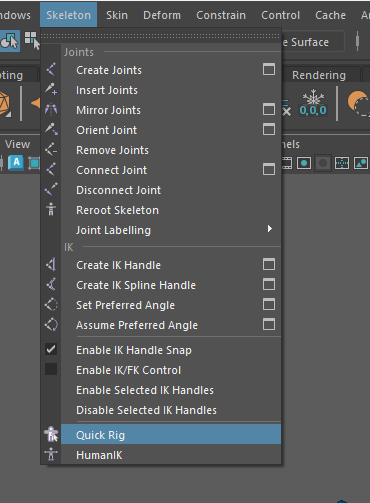
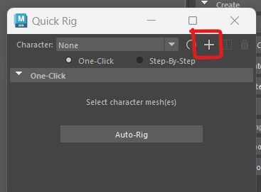
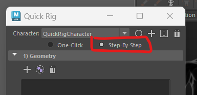
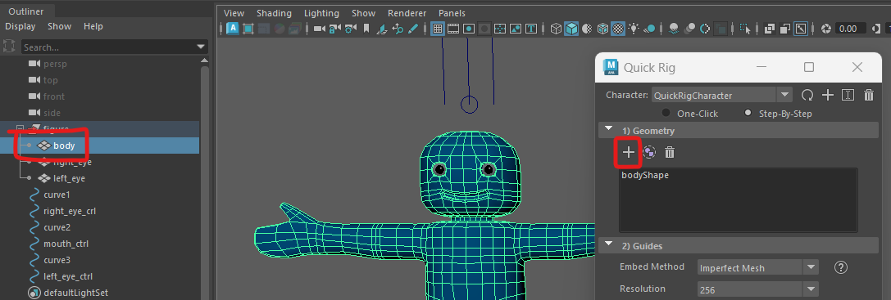
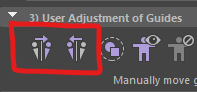
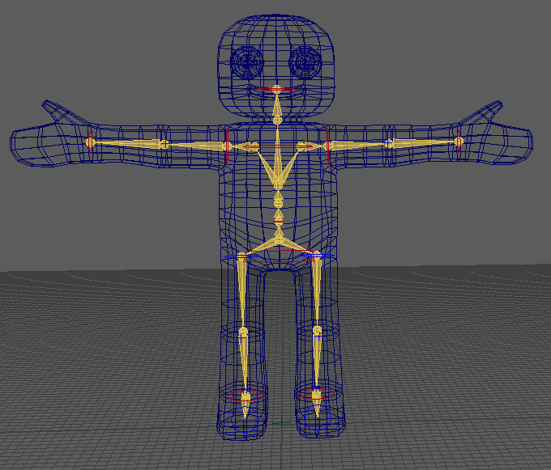
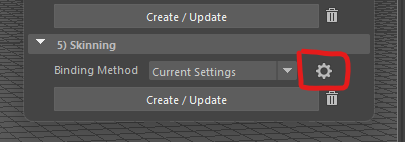
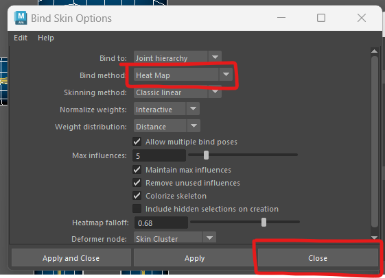

Previously we manually rigged a character, it is important to understand how a rig is constructed, however, if you are rigging a simple biped Character there are a number of ways to generate a standard rig.
In Maya this is called Quick rig which we will be using for this tutorial.
This rig works well for animating in Maya, it will also work well in Unity.
You don't require a character with blend shapes for this worksheet, however, It is important that if you want to add blend shapes, you do this before rigging your character.
If you completed the blend shape worksheet you should continue using that file, otherwise, download the original character from the top of this page on Blackboard.


This will open up the Quick Rig menu.


We will go through the rigging process one step at a time. Each section has a rubbish bin icon which you can press to go back a step in case things don't work as well as expected.
First we add the geometry

The guides show where the joints of the character will go.
Maya does it best to position the guide circles where it things your joints should go, they are normally quite close, however, it doesn't usually get it completely right.
Before you move on to section 4 you need to adjust the guides on one side and then mirror them over to the other side.
Turn on wireframe (Shading > wireframe), this can help you find the knees and elbows.
Start by moving the neck up slightly.
next adjust the right wrist, elbow and shoulder into position. Be careful to place the elbow where the mesh has extra edges so it flexes correctly. Rotate the character around to check they are in the centre of each limb.
Next, move onto the right hip, knee, ankle and toe. Place the guides where you think the joint in the bones would go. the knees should be positioned where the mesh has extra edges, and slightly forward of the hips and ankles to ensure the let bends in the correct direction.
Now that you have positioned all the joints on the right of the character, you can mirror them. Press the mirror key which you think represents what you want, if it goes wrong just undo and try again.

We can now generate the skeleton and control rig.

Check that it looks correct, if it doesn't you can press the bin icon and adjust the guides and try again.
The skeleton is now compleate so we just need to bind it to the mesh.
By default, the Binding Method is set to GVB this will give us a good result, but I recomend you experiment with your mesh to find the best method.
We are going to change it.


Make sure you turn off wireframe mode (shading > smooth shade all) and test out your new rig.
If anything doesn't work as expected, you can delete the skinning by pressing the bin icon, and then press the cog icon to try different settings before binding again.
It is very important that we create the best rig that we can at this stage, it will save us a lot of difficult cleaning up later.
You may notice that the eyes do not move with the head.
You can fix this the same way as we did with the snowman rigging tutorial.
Select the head controller and then ctrl + click one of the eyes.
In the top menu, go to Constrain > Parent
Do the same thing with the other eye.
Now if you rotate the head controller, the eyes will stay in the head (mostly).
Although we have now rigged the Character, we have not quite finished.
If you rotate the head down the eyes will bulge out of their sockets.
We will fix this in the next worksheet on Weight painting